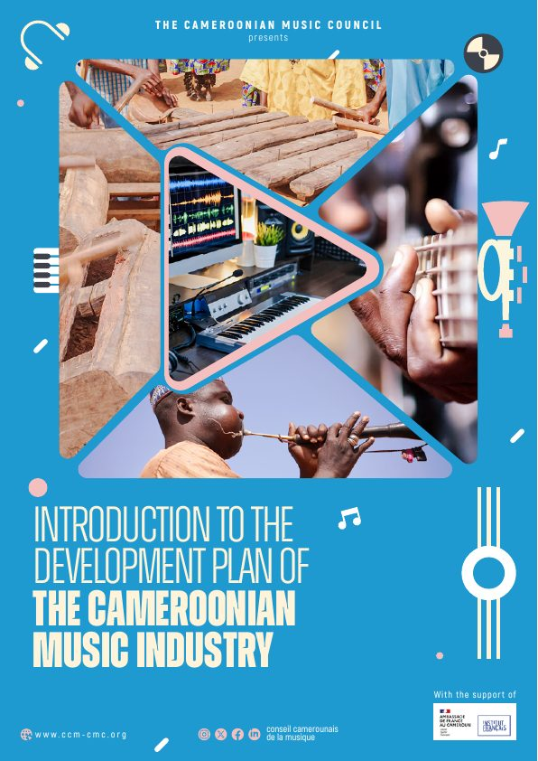

Fédérer
Un réseau de professionnels sur tout le territoire, associations et entreprises réunies.
Fondé à Douala en 2009
Le Conseil Camerounais de la Musique fédère musiciens, producteurs, diffuseurs, promoteurs et chercheurs, et porte leur voix auprès des institutions nationales et internationales.

Les Chantiers musicaux du Cameroun, Douala et Yaoundé, 2024
3 199
professionnels de la musique recensés dans la base de données du CCM
204
rythmes issus du patrimoine des quatre aires culturelles
10
régions représentées aux Chantiers musicaux
12
experts internationaux venus partager leur expérience
204 rythmes recensés dans le patrimoine des aires Fang-Beti, Sawa, Grassfields et soudano-sahélienne.
L'institution
Admis au Conseil international de la musique en 2003, le Cameroun s'est doté, à sa demande, d'une association nationale dédiée : le CCM, enregistré à Douala le 14 septembre 2009.
Sa mission : structurer l'industrie musicale en veillant à l'épanouissement des acteurs, documenter et valoriser le patrimoine, encourager l'éducation musicale des jeunes, et défendre le statut et les droits des musiciens.
Un réseau de professionnels sur tout le territoire, associations et entreprises réunies.
Séminaires, ateliers et réunions d'experts pour professionnaliser les acteurs.
Un observatoire de la musique qui produit données et arguments techniques.
Pour la prise en compte de la musique dans la Stratégie nationale de développement (SND30).
Le monde a changé
28,6 Md $
chiffre d'affaires mondial de la musique enregistrée en 2023, 9e année de croissance
667 M
d'abonnés payants au streaming dans le monde
+24,7 %
de revenus en Afrique subsaharienne : la croissance la plus rapide au monde
Sur Boomplay, 1,5 million de Camerounais inscrits.
Sur Spotify, Apple Music et Deezer réunis : 4 700 comptes payants.
Chaque point représente environ 4 700 inscrits sur Boomplay. Un seul correspond aux abonnés payants. Une rentabilité énorme, encore à conquérir.
Sources : IFPI, Global Music Report 2024, cité par le CCM (2024).

Programme phare · 2024
Plus de six mois de concertation pour diagnostiquer la filière, renforcer ses acteurs et poser les bases d'un schéma de développement. Avec le soutien de l'Ambassade de France au Cameroun et de l'Institut français, dans le cadre du Fonds Équipe France.
64
professionnels
6
mois de travail
3
étapes
Observatoire de la musique
Les résultats de l'étude menée au premier semestre 2024 à Douala, Yaoundé, Bafoussam et Garoua, et de la cartographie des 3 199 professionnels recensés par le CCM.
Source : CCM, Introduction au schéma de développement de l'industrie musicale camerounaise, 2024 (base de données CCM, portail ccm-cmc.org/data).
Simulateur du marché
12 millions de Camerounais de 10 à 74 ans peuvent dépenser 50 ou 100 FCFA par chanson, le prix pratiqué chez les « téléchargeurs ». Choisissez un scénario.
Chansons achetées par personne et par an
Prix par chanson
Scénario
de chiffre d'affaires par an
12 027 032 consommateurs × × FCFA
26 996
débits de boissons sonorisés : autant de lieux de diffusion de la musique
6 sur 10
opérateurs culturels sont constitués en organisation officiellement reconnue
5
travailleurs en moyenne par organisation musicale
4 sur 10
entrepreneurs culturels ne dégagent pas de bénéfice
Publications

Cartographie des professionnels, habitudes d'écoute, chaînes de valeur, cadre réglementaire et recommandations.
Télécharger
La version anglaise, pour les partenaires internationaux et les régions anglophones.
DownloadGouvernance
Enregistré sous le n° 133/2009/RDDA/C19/BAPP, le CCM a amendé ses statuts et élu son bureau exécutif lors des assemblées générales du 31 mars 2021 à Yaoundé.
Président
Didier Ngadjui Toko
Expert du secteur musical, zone Afrique-Caraïbes-Pacifique
En images
Rayonnement international
Né à l'initiative du Conseil international de la musique, le CCM défend les cinq droits de la musique proclamés par le CIM en 2001 et accompagne les professionnels sur les grands rendez-vous internationaux.
MIDEM
Cannes, France
WOMEX
Salon des musiques du monde
Visa For Music
Rabat, Maroc
ACCES
Music In Africa Conference
Actualités

Juin 2024 · Publications

Mars 2024 · Formation

Février 2024 · Programmes
Être membre
Toute personne physique ou morale du domaine de la musique peut adhérer et recevoir sa carte de membre du CCM : pour se former, rencontrer les autres acteurs de la filière et participer à sa structuration.
Paiement Orange Money 690 939 633 · MTN MoMo 653 807 653. Contribution de soutien, matérielle ou financière, libre.
Conseil Camerounais de la Musique
Carte de membre
Prénom NOM
Votre métier de la musique
Conseil Camerounais
de la Musique
www.ccm-cmc.org
Signature du président du CCM
Partenaires